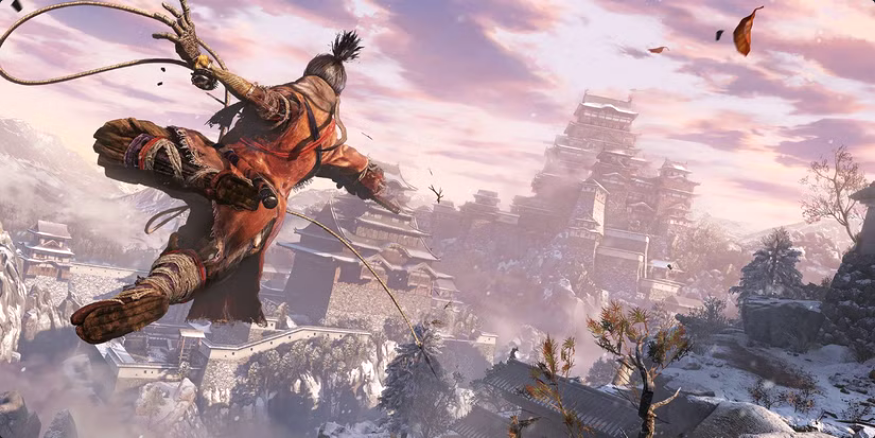
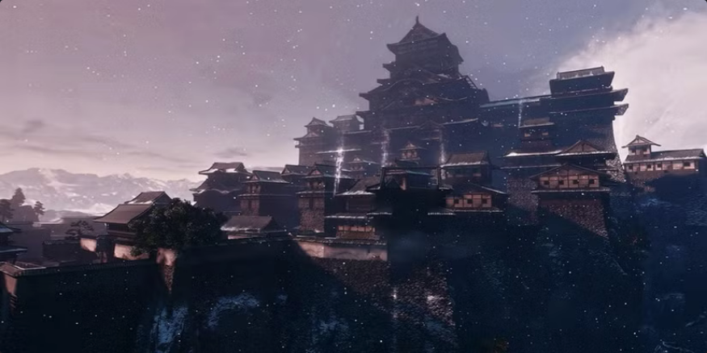
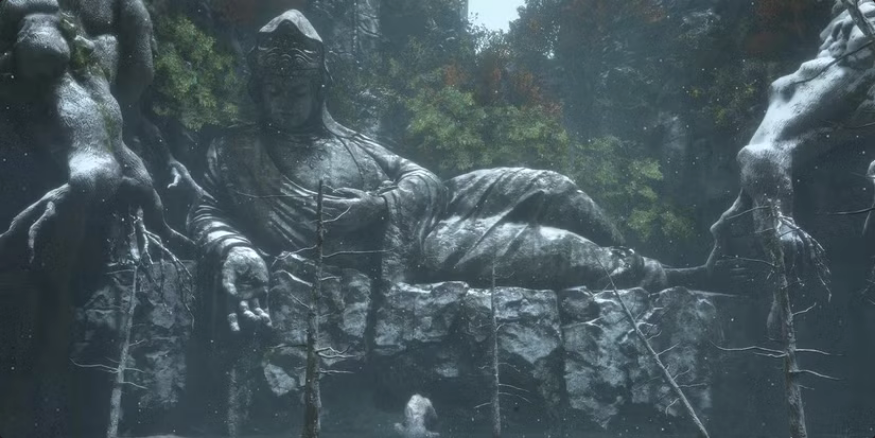
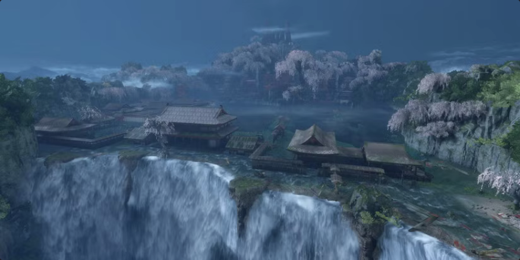

Regiões de Ashina
Exploração e Mapa

Arredores de Ashina
Chefe: Gyoubu Oniwa
Itens: Shuriken, Fogos
A área inicial, coberta de neve e patrulhada por soldados e lobos.

Propriedade Hirata
Chefe: Lady Butterfly
Itens: Machado, Cano de Fogo
Uma memória do passado, acessada via sino. Área cheia de bandidos e fogo.

Castelo de Ashina
Chefe: Genichiro Ashina
Itens: Sabimaru, Guarda-Chuva
O coração do poder de Ashina. Telhados repletos de ninjas Nightjar.

Templo Senpou
Chefe: Macacos do Biombo
Itens: Lâmina Mortal
Um templo budista corrompido pela busca da imortalidade. Monges perigosos.

Vale Afundado
Chefe: Macaco Guardião
Itens: Lótus do Palácio
Um desfiladeiro cheio de atiradores de elite e piscinas de veneno.

Palácio da Fonte
Chefe: Monja Corrompida
Itens: Lapis Lazuli
A área divina final. Belíssima, mas habitada por guerreiras Okami letais.